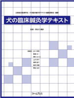

ごあいさつGreetings
ごあいさつ

あなたの動物の病気になったらどういう治療を受けさせたいですか？ どのような対応を受けたいですか？ 私はそこに考えています. 獣医師として動物の診療には、いつも動物や人の情報がとても重要です。どんなことでも気になることがございましたらご相談ください。
診療について
動物を中心に一般診療に加えて、身体になるべく負担の少ない安心の手当を行っています。
(一般診療と自然療法)
スタッフ
- 院長
- 古城 康夫（ふるしろ やすお） 獣医師・鍼灸師（人と）
- パウル・シュミット式バイオレゾナンス認定医
- 獣医鍼灸師認定資格
- パウル・シュミット式バイオレゾナンス認定医
- 学歴 
- 医学教育出版社テキスト （ファームプレス） 編集/監修編集委員 東洋/並木義雄監修学位 その他小動物臨床テキスト編集委員会 総編集（ファームプレス編集委員）、日本鍼灸医学会、コニコープ、シューマイドみよ、古城康夫、五十川茂、兼谷忠一、中原健一
- 看護婦
- 古城 真知子 （ふるしろ まちこ） ドッグライフカウンセラー
- パウル・シュミット式バイオレゾナンス認定医
- トリマー 並び夫婦医師
- 古城 奈緒子 （ふるしろ なおこ）
JKC認定トリマーC級・JKC認定ハンドラーC級- 動物管理士2級・ペットメディカルサポート認定医
Korogi Animal Clinicコウロギ動物病院
〒889-1609
宮崎市清武町あさひ1-59
TEL 0985-67-4312
FAX 0985-67-4315